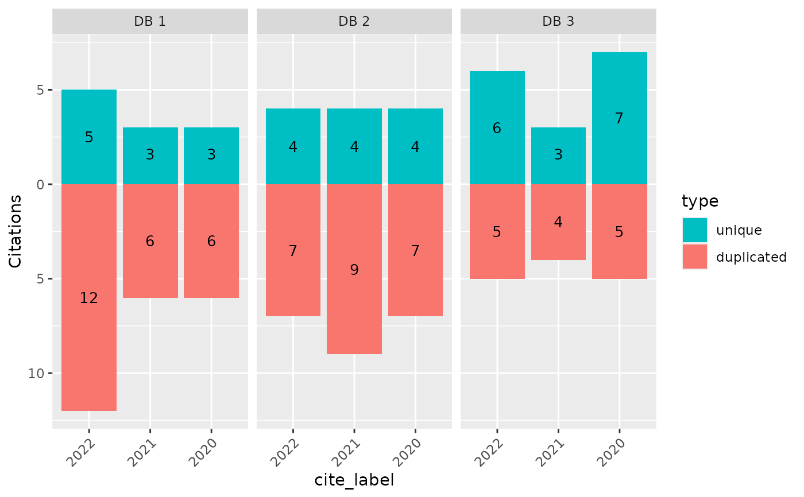

Create a bar chart that compares source contributions over stages
Source:R/plots.R
plot_contributions.RdCreate a faceted plot that shows unique contributions and duplicated records across two metadata dimensions. Most typical use-case might be to show the contributions of each source across different screening stages.
Usage
plot_contributions(
data,
facets = cite_source,
bars = cite_label,
color = type,
center = FALSE,
bar_order = "keep",
facet_order = "keep",
color_order = "keep",
totals_in_legend = TRUE
)Arguments
- data
A tibble with one hit per row, with variables indicating meta-data of interest.
- facets
Variable in data used for facets (i.e. sub-plots). Defaults to source (i.e. cite_source). Specify NULL to refrain from faceting.
- bars
Variable in data used for bars. Defaults to label (i.e. cite_label)
- color
Color used to fill bars. Default to
unique- center
Logical. Should one color be above and one below the axis?
- bar_order
Character. Order of bars within each facet, any levels not specified will follow at the end. If "keep", then this is based on factor levels (or the first value) in the input data.
- facet_order
Character. Order of facets. Any levels not specified will follow at the end.
- color_order
Character. Order of values on the color scale.
- totals_in_legend
Logical. Should totals be shown in legend (e.g. as Unique (N = 1234))
Examples
data <- data.frame(
article_id = 1:100,
cite_source = sample(c("DB 1", "DB 2", "DB 3"), 100, replace = TRUE),
cite_label = sample(c("2020", "2021", "2022"), 100, replace = TRUE),
type = c("unique", "duplicated")[rbinom(100, 1, .7) + 1]
)
plot_contributions(data,
center = TRUE, bar_order = c("2022", "2021", "2020"),
color_order = c("unique", "duplicated")
)
